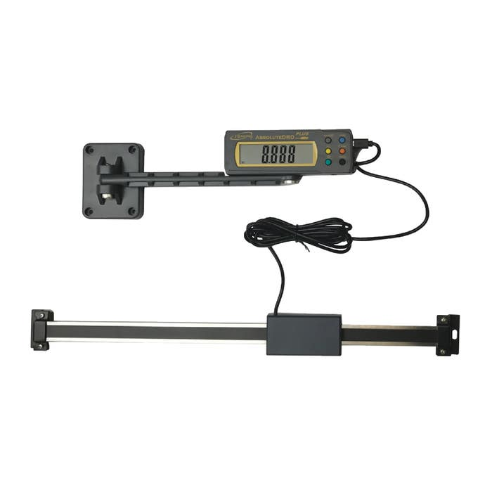
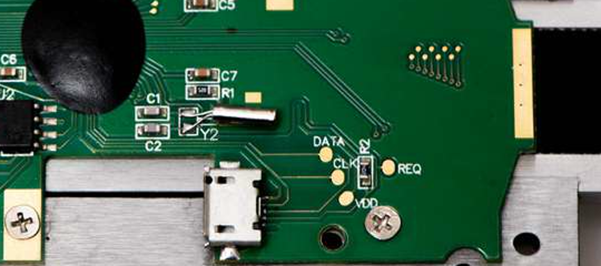
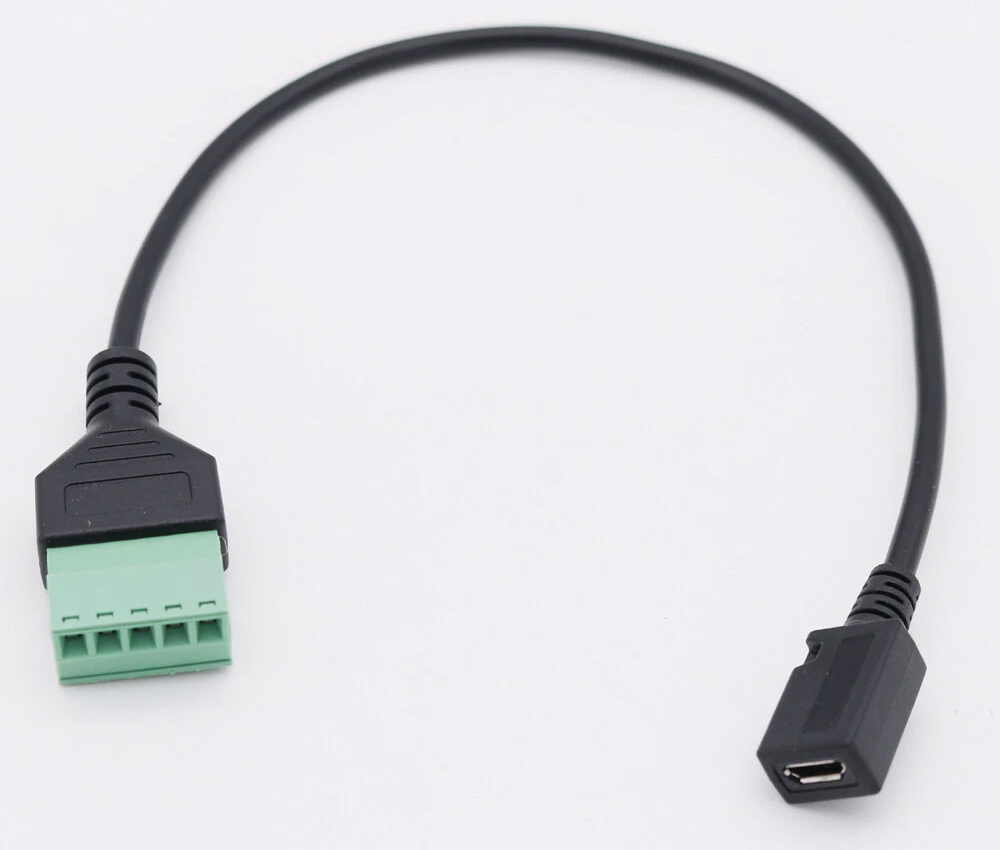
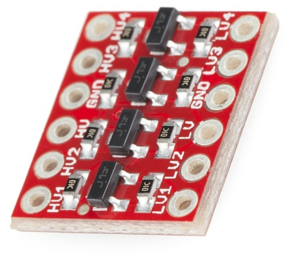
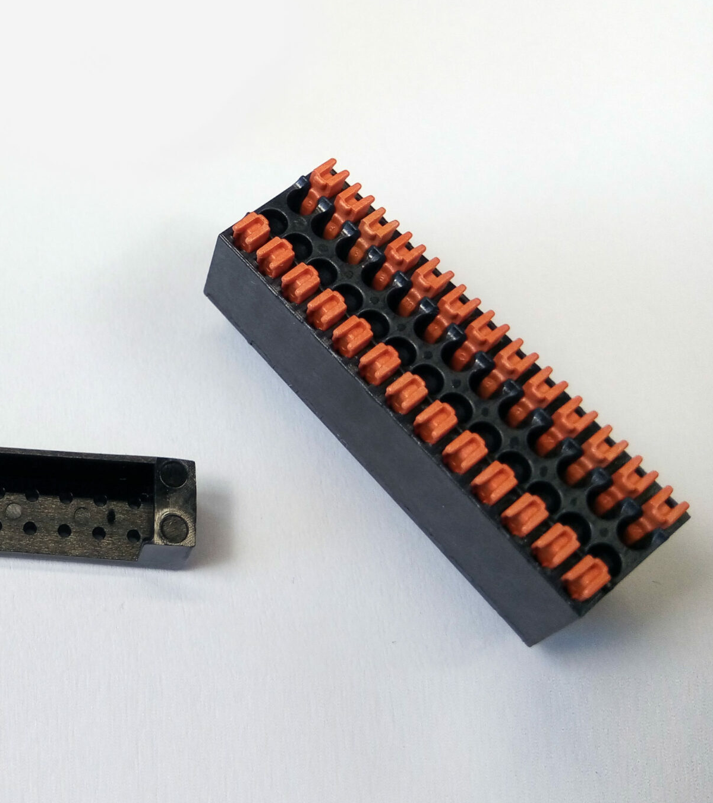
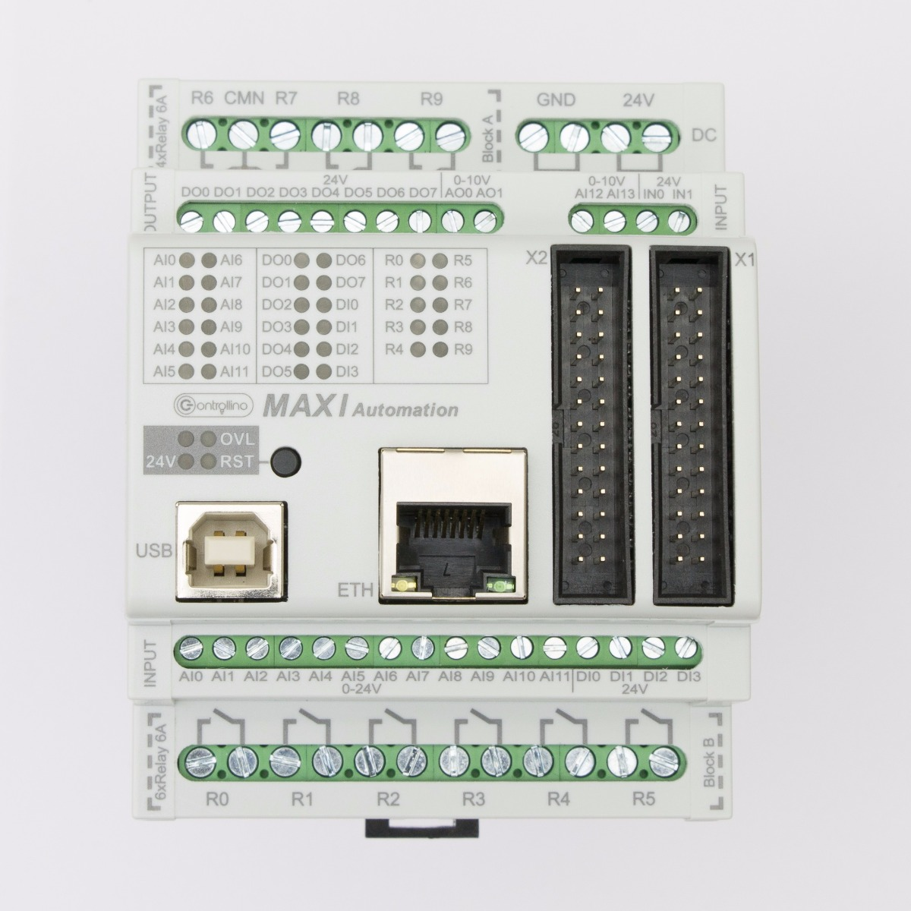
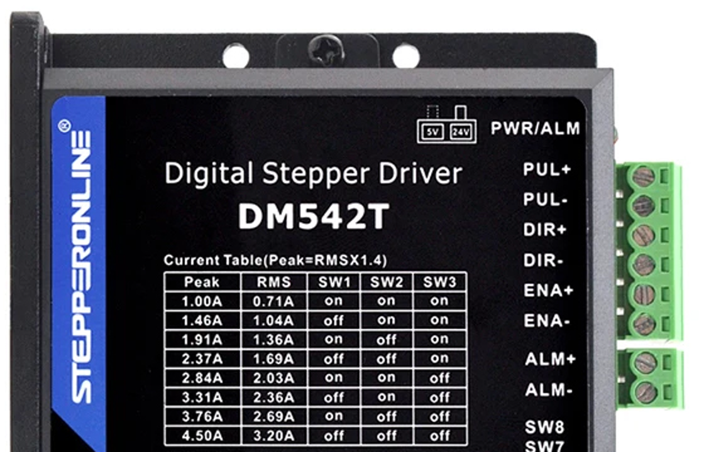
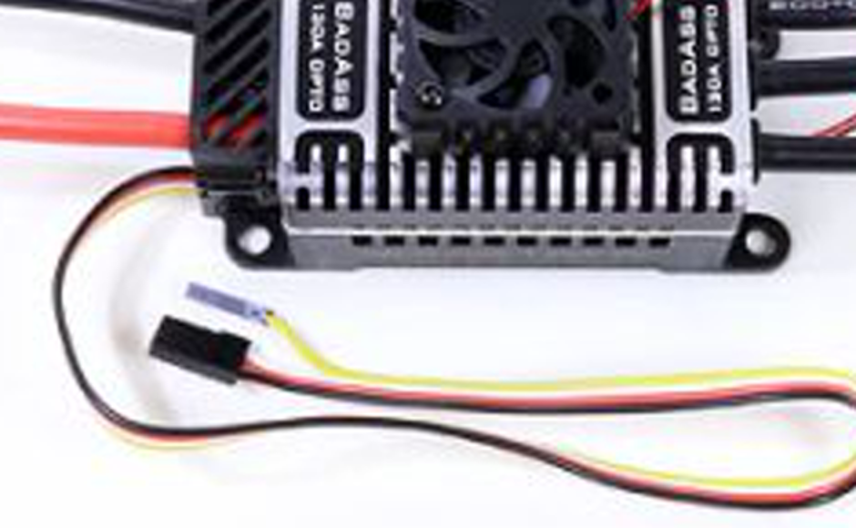

CONTROLLINO MAXI AUTOMATION — PROPOSED MOTION-CONTROL WIRING
KEY
24V3.3V5VGNDCLOCKDATASTEPDIRENAESCFIELD INPUT







PROPOSED TERMINAL ASSIGNMENTS
DRO BREAKOUT + → LV · D− → LV1 · D+ → LV2 · − → GND · S unused
LEVEL SHIFTER HV1 → X1 D51 · HV2 → X1 D50 · HV → X1 5V · GND → X1 GND · LV → X1 3V3
DM542T X1 D3 → PUL− · X1 D2 → DIR− · X1 D4 → ENA− · X1 5V → PUL+/DIR+/ENA+
BRUSHLESS ESC X1 D5 → receiver signal · X1 GND → receiver return
24 V INPUTS AI0 RUN · AI1 DIRECTION · AI2 BOTTOM LIMIT · AI3 TOP LIMIT
24 V FIELD SWITCH HARNESS — ENDPOINT PHOTOS REQUIRED
Power the MAXI Automation from regulated 24 VDC at the pictured 24V and GND supply terminals.
Rewire each dry contact to source fused +24 V into AI0–AI3. The former Yún contacts-to-GND / INPUT_PULLUP arrangement is not retained.
Fit the included orientation adapter into X1, then install terminal plug 99.900.04. Every discrete wire shown lands in the plug—not directly on the controller header pins.